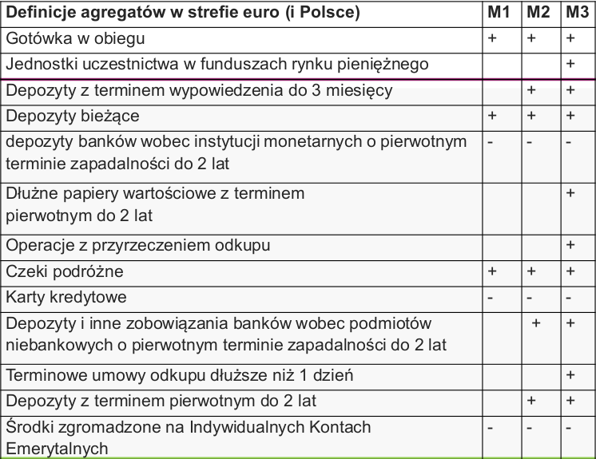
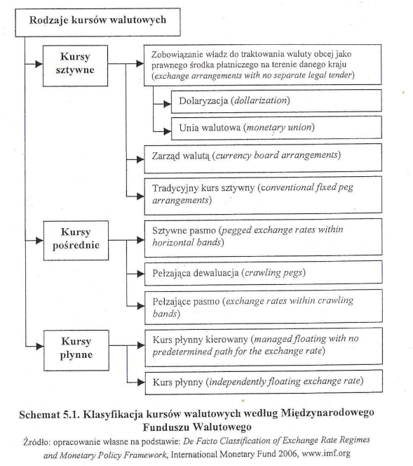
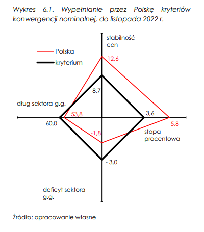

Egzamin PP
Table of Content
Cele NBP¶
Cele Operacyjne¶
- NBP - kształtowanie stawki POLONIA w pobliżu stopy referencyjnej NBP
- POLONIA
- stopa referencyjna
POLONIA¶
-
stopa może odchylać się od poziomu stopy referencyjnej NBP w ramach korytarza między stopą lombardową a depozytową
-
stopa kształtowana jest przez
- inne stopy procentowe
- OOR
- system rezerwy obowiązkowej
- swapy walutowe
- interwencje walutowe
Cele Pośrednie¶
Stopy Procentowe¶
Wartości¶
Pytania¶
Bank Centralny¶
- “Rozdział 2. Bank centralny, jego cechy, funkcje i zadania” (Rutkowski, p. 5) (pdf)
polityka monetarna i fiskalna muszą być skoordynowane
Funkcje¶
• bank banków
• bank państwa
• kredytodawca ostatniej instancji
• kierowanie polityką pieniężną
• emisja pieniądza gotówkowego
• utrzymanie centralnych rezerw walutowych kraju oraz regulowanie kursu waluty krajowej na rynku walutowym
• nadzór nad bankami komercyjnymi
Prawo O NBP¶
- ustawa o narodowym banku polskim
- najważniejsza ustawa
- ustawa nie określa funkcji banku centralnego
- art. 3 ust. 1
- wspieranie polityki gospodarczej rządu
-
zadania NBP
- regulowanie płynności banków oraz ich refinansowanie
- za pomocą Operacje Otwartego Rynku
- stabilność systemu finansowego
- odpieranie ryzyk systemowych
- regulowanie płynności banków oraz ich refinansowanie
-
konstytucja
- art. 227 ust. 1
- NBP odpowiada za wartość polskiego pieniądza
- art. 227 ust. 1
Organy NBP¶
- prezes nbp
Rpp¶
- 9 członków - po 3 sejm, senat, prezydent
- obecnie 7 członków
- kadencja - 6 lat
- obecnie 5 kadencja
Zadania¶
- ustala stopy
-
ustala poziom rezerwy obowiązkowej
- obniżona z 3.5% do 0.5% - finansowanie obligacji rządowych przez banki
-
posiedzenia
- co miesiąc
- założenia polityki pieniężnej
- publikowane we wrześniu roku poprzedniego
-
strategia inflacyjna w warunkach płynnego kursu walutowego
- nie wyklucza interwencji na rynku walutowym
-
Ważnym elementem wykorzystywanej przez Radę strategii celu inflacyjnego jest komunikacja z otoczeniem. Z tego względu decyzje Rady wraz z ich uwarunkowaniami są przedstawiane w:
- w Informacjach po posiedzeniach Rady na konferencjach prasowych,
- w Opisach dyskusji na posiedzeniach decyzyjnych Rady,
- Raportach o inflacji,
- Założeniach polityki pieniężnej
- Sprawozdaniu z wykonania założeń polityki pieniężnej.
Cele¶
-
cel nadrzędny banków centralnych
- niska i stabilna inflacja
-
cel finalny NBP
- współdziałanie z rządem w realizacji programu gospodarczego,
-
cel strategiczny
- średniookresowy cel inflacyjny
- 2.5% +/- 1
- od 2004 przeciętny poziom inflacji w Polsce wynosił 2.7% rocznie
- średniookresowy cel inflacyjny
-
cele pośrednie
- podażowe
- stopy procentowe
-
cele operacyjne
- W 2023 r. celem operacyjnym polityki pieniężnej NBP będzie kształtowanie stawki POLONIA w pobliżu stopy referencyjnej NBP.
Płynność Sektora Bankowego¶
- zdolność do terminowego regulowania zobowiązań,
- Nadmierna płynność sektora bankowego to nadwyżka podaży rezerw płynnych banków ponad poziom rezerwy obowiązkowej wymaganej przez NBP
Funkcje Banku Centralnego¶
- kierowanie polityką pieniężną
- rezerwy walutowe
- emisja pieniądza gotówkowego
Działania¶
- ekspansywna pp NBP
- operacje zasilające sektor bankowy w płynność poprzez transakcje repo oraz operacje zakupu obligacji skarbowych na rynku wtórnym w ramach strukturalnych operacji otwartego rynku
- znacząco spadła rentowność emitowanych obligacji, a w związku z tym obniżył się koszt obsługi zadłużenia publicznego, powiększając tym samym przestrzeń dla niezbędnej stymulacji fiskalnej
Rodzaje¶
- akomodacyjna polityka pieniężna - wspierająca aktywność gospodarczą
Sprawozdania¶
- Dokumenty RPP. Sprawozdania z wykonania założeń polityki pieniężnej
Cele Polityki Pieniężnej¶
- strategiczne
- długookresowe - BCI
- pośrednie
- kształtownie podaży i stóp
- operacyjne
- POLONIA
- stop. ref.
- POLONIA
Płynność Sektora Bankowego¶
- czynniki
- rodzaje
- jak mierzą
- ryzyko płynności bankowej
- rola banku centralnego w ogarnianiu płynności
Pieniądz¶
- funkcje
Podaż Pieniądza¶
- Podaż pieniądza: ilość pieniądza w obiegu (M)
Kreacja Pieniądza¶
- pierwotna
- wprowadzanie gotówki przez bank centralny do systemu
- kredyty udzielane bankom komercyjnym przez bank centralny
- wtórna
- udzielanie kredytów przez banki komercyjne swoim klientom
Wpływanie Na Podaż¶
W Celu Zwiększenia Podaży¶
- obniżenie stopy BC w celu zwiększenia pożyczek dla banków komercyjnych
- zakup rządowych papierów wartościowych na otwartym rynku,
- obniżenie poziomu stopy rezerwy obowiązkowej;
W Celu Zmniejszenia Podaży¶
- podwyższenie stopy BC w celu zmniejszenia pożyczek dla banków komercyjnych,
- sprzedaż posiadanych rządowych papierów wartościowych,
- podwyższenie poziomu stopy rezerwy obowiązkowej
Agregaty Pieniężne¶
-
mnożnik kreacji
-
tabela, wykres
 -
baza monetarna M0 = R+C
- R – pieniądz bezgotówkowy banków komercyjnych na rachunkach w banku centralnym
- C – pieniądz gotówkowy (monety i banknoty w obiegu poza sektorem bankowym)
-
M1
- Gotówka w obiegu (bez kas banków)
- Depozyty bieżące (łącznie z overnight)
- gospodarstw domowych
- niemonetarnych instytucji finansowych
- przedsiębiorstw
- instytucji niekomercyjnych działających na rzecz gospodarstw domowych
- instytucji samorządowych
- funduszy ubezpieczeń społecznych
-
M2
- M1+
- depozyty terminowe z terminem pierwotnym do 2 lat włącznie
- depozyty z terminem wypowiedzenia do 3 miesięcy włącznie
-
M3
- M2+
- Operacje z przyrzeczeniem odkupu
- dłużne papiery wartościowe z terminem pierwotnym do 2 lat włącznie
- Jednostki uczestnictwa w funduszach rynku pieniężnego
Instrumenty Rynku Pieniężnego¶
Bon Skarbowy¶
- Instrument o podstawie dyskontowej
- Emitent – Skarb Państwa
- Termin wykupu od 1 dnia do 52 tygodni
- Wartość nominalna – 10 tys. zł
- Stopy zwrotu obliczane na podstawie roku 365-dniowego
- Podstawa prawna: Ustawa budżetowa, Ustawa o finansach publicznych, Rozporządzenia MF
Bon Pieniężny NBP¶
- Emitent – Narodowy Bank Polski
- Cel – prowadzenie polityki pieniężnej poprzez operacje na rynku pieniężnym (operacje otwartego rynku)
- Sprzedaż bonów przez NBP – zmniejszanie ilości pieniądza na rynku
- Zakup bonów przez NBP - zwiększanie ilości pieniądza na rynku •Wartość nominalna – 10 tys. zł
- Termin – podstawowe bony 7 dni
- Uczestnicy rynku – instytucje finansowe i NBP
- Brak ryzyka
- Duża płynność
Instrumenty Polityki Pieniężnej¶
Stopy Procentowe¶
-
stopa lombardowa
- określa górny poziom wzrostu stóp procentowych na rynku overnight
- wyznacza jednocześnie koszt pieniądza oferowanego przez NBP
- Kredyt lombardowy a na celu dostarczenie płynności bankowi komercyjnemu
-
stopa referencyjna
- określa minimalną rentowność podstawowych (siedmiodniowych) operacji otwartego rynku
- wpływa jednocześnie na poziom oprocentowania depozytów na rynku międzybankowym o porównywalnym do operacji otwartego rynku terminach zapadalności
-
stopa depozytowa
- określa dolny pułap rynkowych stóp overnight
- wyznacza przychód depozytu składanego na koniec dnia w NBP
- symetryczna ze stopą lombardową wobec stopy referencyjnej na rynku stóp overnight1
- W XI. 2021 przywrócono symetrię szerokości korytarza stóp procentowych NBP (+50/-50 pb względem stopy Katedra Bankowości
-
stopa dyskontowa
- określa cenę, po jakiej bank centralny udziela kredytu dyskontowego bankom komercyjnym (kupuje weksle (własne przedsiębiorstw) od banków komercyjnych).
-
stopa redyskontowa
- określa cenę, po jakiej bank centralny udziela kredytu redyskontowego bankom komercyjnym (kupuje weksle (handlowe zdyskontowane) od banków komercyjnych).
Stopa Rezerwy Obowiązkowej¶
-
funkcje
- Funkcje tradycyjne
- Zabezpieczenie wkładów deponentów
- Wpływanie na mnożnik kreacji pieniądza
- Przysparzanie dochodów bankowi centralnemu, a pośrednio państwu
- Funkcje nowoczesne
- Tworzenie popytu na pieniądz banku centralnego (w sytuacji nadpłynności sektora bankowego)
- Stabilizacja rynkowych stóp procentowych (w przypadku rezerwy opóźnionej i uśrednionej)
- Funkcje tradycyjne
-
procedura utrzymania rezerw
- Wyznaczanie podstawy naliczania rezerwy
- Podstawą naliczania rezerwy są zazwyczaj przyjęte krótkoterminowe depozyty i wyemitowane dłużne bankowe papiery wartościowe.
- średnia arytmetyczna ze stanów środków pieniężnych, na koniec każdego dnia tego miesiąca
- Naliczanie rezerwy
- Okresy naliczania i utrzymywania rezerwy wynoszą zazwyczaj miesiąc.
- Sposób naliczania rezerwy może być uśredniony lub nieuśredniony. W przypadku uśrednienia dopuszcza się wyznaczanie średnich na podstawie wszystkich dni okresu naliczania rezerwy lub tylko wybranych.
- Odprowadzanie rezerwy
- Utrzymywanie rezerwy
- Wyznaczanie podstawy naliczania rezerwy
Zwolnienia Z Rezerwy Obowiązkowej¶
- 2020
- odnotowano 4 przypadki nieutrzymania przez banki rezerwy obowiązkowej na wymaganym poziomie.
- 2021
- nie odnotowano przypadku nieutrzymania przez podmioty rezerwy wymaganego poziomu tego instrumentu.
Stopy Na Rynku Międzybankowym¶
-
rynek polski
- WIBOR (Warsaw Interbank Offered Rate) - przeciętna stopa oprocentowania kredytów
- WIBOR zostanie z początkiem przyszłego roku zastąpiony przez WIRD. WIRD to indeks, który określa średnie oprocentowanie transakcji depozytowych zawieranych przez instytucje finansowe, kredytowe i duże firmy.
- WIBID (Warsaw Interbank Bid Rate) przeciętna stopa oprocentowania depozytów
- WIBOR (Warsaw Interbank Offered Rate) - przeciętna stopa oprocentowania kredytów
-
rynek międzynarodowy
- LIBOR (London Interbank Offered Rate) – przeciętna stopa oprocentowania kredytów na rynku międzybankowym w Londynie
- EURIBOR (Euro Interbank Offered Rate) – przeciętna stopa oprocentowania kredytów na rynku międzybankowym w europejskiej Unii Gospodarczej i Walutowej
Operacje Depozytowo-kredytowe¶
- rodzaje
- kredyt redyskontowy, kredyt lombardowy, kredyt w ciągu dnia, …
Kredyt Refinansowy¶
- sufit zmienności rynkowych stóp procentowych
- stopy procentowe nie powinny jej przekroczyć
Funkcje¶
- refinansowanie operacji aktywnych banków komercyjnych
- pomoc w odzyskiwaniu płynności banku komercyjnego w sytuacjach nagłego jej zachwiania
-
wpływ na rynkową stopę procentową, a także sygnalizowanie zmian w restrykcyjności polityki pieniężnej
-
tradycyjne
- standardowa regulacja płynności banków komercyjnych
- kształtowanie rynkowych stóp procentowych
-
nowoczesne
- dostarczanie płynności bankowi komercyjnemu w sytuacji nagłego jej zachwiania (kredytodawca ostatniej instancji)
- ograniczanie od góry zmienności rynkowych stóp procentowych (sufit zmienności rynkowych stóp procentowych)
-
ograniczenia w dostępie do kredytu refinansowego
- w wysokości kredytu
- limity
- posiadana przez dany bank ilość walorów mogących być zastawem w przypadku kredytu refinansowego
- stopa procentowa
- znacząco wyższa od rynkowej - Oprocentowanie kredytu refinansowego, niewymienionego w § 2 (Uchwała RPP j.w.), jest wyższe o 1 punkt procentowy niż oprocentowanie kredytu lombardowego i wynosi 8,25%
- w wysokości kredytu
Stopy Refinansowe NBP¶
- kredyt redyskontowy: 6,80%
- kredyt wekslowy (dyskontowy): 6,85%
- kredyt lombardowy: 7,25%
Kredyt W Ciągu Dnia (techniczny)¶
- kredyt nieoprocentowany, zabezpieczany skarbowymi papierami wartościowymi, zaciągany i spłacany w tym samym dniu operacyjnym.
- instrument ułatwiający bankom zarządzanie płynnością w ciągu dnia operacyjnego
-
zapewnia jednocześnie płynność rozrachunku międzybankowego NBP
-
kredyt lombardowy
-
kredyt redyskontowy
- -
stopy
Operacje Otwartego Rynku¶
Cele¶
- Kształtowanie płynności sektora bankowego i przez to jego zdolności do kreacji pieniądza
- Pośrednie lub bezpośrednie wpływanie na poziom stóp procentowych,
- Zwiększanie efektywności działania rynku pieniężnego.
Podział¶
Wpływ Na Płynność Sektora Bankowego¶
Operacje Zasilające¶
- Transakcje, w których BC kupuje papiery wartościowe -> BC daje sianko na rynek -> powodują zwiększenie płynności sektora bankowego
- Mechanizm
- BC chce obniżyć wysokość stóp % na rynku -> daje tańszy kredyt o niższym oprocentowaniu (kredyt ten jest w formie skupu papierów wartościowych posiadanych przez banki, ale wychodzi na to samo, tylko wyższy poziom komplikacji)
Operacje Absorbujące¶
- Transakcje, w których BC sprzedaje lub emituje własne papiery wartościowe -> BC zabiera sianko w zamian za papierek -> powoduje to zmniejszenie płynności sektora bankowego
- Mechanizm
- BC chce podnieść wysokość stóp % na rynku -> Sprzedaje papiery wartościowe taniej niż na rynku -> wyższa stopa % dla banku -> Wielkość płynnych środków w obiegu zmniejsza się (zmniejsza się przez to możliwość kreacji pieniądza wkładowego przez banki) -> Rynkowe stopy procentowe lokat (i w konsekwencji kredytów) ulegają podwyższeniu z uwagi na konkurencyjność przeprowadzonych przez BC operacji sprzedaży i mniejszą dostępność pieniądza na rynku (bo bank centralny licytuje więcej niż Kowalski)
Warunkowość¶
- bezwarunkowe
- natychmiastowe transakcje kupna / sprzedaży pap. wartościowych przez BC od instytucji kredytowych
- warunkowe
- jednoczesne zawarcie pomiędzy BC a instytucjami kredytowymi transakcji natychmiastowej kupna / sprzedaży pap. wartościowych i przeciwstawnej do niej transakcji terminowej
| Kupno | Sprzedaż | |
|---|---|---|
| Warunkowe | Repo - BC kupuje od instytucji kredytowych papiery wartościowe pod warunkiem ich odsprzedaży w określonym terminie i po określonej cenie - w pasywach banku (bo zobowiązanie) |
Reverse Repo - BC sprzedaje instytucji kredytowej papiery wartościowe pod warunkiem ich odsprzedaży w określonym terminie i po określonej cenie - w aktywach banków (bo aktywa finansowe) - Cel: ograniczenie podaży pieniądza (zabiera siano, daje nic nie warty papier ;))) ) |
| Bezwarunkowe | Outright Purchase - BC kupuje od inst. kred. papiery wartościowe |
Outright Sale - BC sprzedaje inst. kred. papiery wartościowe lub emituje własne walory |
Operacje Podstawowe (RRCO)¶
- Regularność
- standardowo przeprowadzane w sposób regularny raz w tygodniu, z reguły z 7-dniowym terminem zapadalności.
- Rentowność
- na przetargach obowiązuje stała rentowność na poziomie stopy referencyjnej NBP.
- Charakter operacji:
- Z uwagi na oczekiwane utrzymywanie się nadpłynności w sektorze bankowym operacje te polegają na emisji bonów pieniężnych NBP.
Operacje Dostrajające¶
- Operacje dostrajające mogą zostać podjęte w celu ograniczenia zmienności krótkoterminowych rynkowych stóp procentowych.
- operacje absorbujące:
- emisja bonów pieniężnych NBP,
- transakcje reverse repo;
- operacje zasilające:
- przedterminowy wykup bonów pieniężnych NBP,
- transakcje repo.
Stawka POLONIA¶
- Polish Overnight Index Average
- wprowadzona w 2005
- średnia stawka overnight ważona wielkością transakcji na rynku depozytów międzybankowych,
- poziom stawki odzwierciedla rzeczywiste oprocentowanie krótkoterminowych lokat międzybankowych.
Operacje Strukturalne¶
- po co
- przeprowadzone w celu długoterminowej zmiany struktury płynności w sektorze bankowym
- jak
- emisja obligacji
- zakup oraz sprzedaż papierów wartościowych na rynku wtórnym
-
kiedy
- 13 i 27 maja 2020: NBP przeprowadził operacje strukturalne, w postaci transakcji typu outright buy (purchase)
- W reakcji na wybuch pandemii NBP uruchomił strukturalne operacje otwartego rynku polegające na skupie na rynku wtórnym dłużnych papierów wartościowych (od 19 marca 2020 r.). W ramach tych operacji początkowo NBP skupował obligacje skarbowe
- W 2021 r. operacje strukturalne przeprowadzane były w okresie styczeń – listopad. Dokonywano ich w trybie regularnym, zgodnie z terminami ogłaszanymi przez NBP z wyprzedzeniem. W październiku i listopadzie ograniczono skalę, a w grudniu zakończono operacje strukturalne skupu obligacji na rynku wtórnym.
-
absorbujące
-
zasilające
-
mechanizm oddzialywania
- ze wzgledu na rodzaj w klasyfikacji
Stopy Procentowe¶
- rodzaje
- wartość stóp
- wykres
- rynek międzybankowy
Kursy I Operacje Walutowe¶
- podział
- rodzaje kursów walutowych
- 
- rodzaje kursów walutowych
- deprecjacja, rewaluacja¶
-
ryzyko walutowe
-
polityka kursowa
- administracyjna
- rynkowa
- Wiśniewski, M., & Skopowski, M. (2012). Instrumenty współczesnej polityki pieniężnej—Wydanie I. s. 111
Polityka Pieniężna EBC¶
- #todo
Porównanie OOR W NBP I EBC¶
Inflacja¶
- #todo
Polska W UE, Kryteria Konwergencji¶
-
ostatnia prezentacja?
 -
Ze względu na fakt, że złoty nie uczestniczy w ERM II, Polska nie wypełnia kryterium kursu walutowego
Polska W Euro¶
Korzyści¶
- bezpośrednie
- a) Redukcja ryzyka kursowego i kosztów transakcyjnych
- b) Wzrost stabilności i wiarygodności makroekonomicznej
- c) Spadek stóp procentowych
- Intensyfikacja wymiany handlowej
- Wzrost inwestycji
- Integracja, rozwój i stabilność rynków finansowych
- Wzrost PKB i dobrobytu
Zagrożenia¶
- Długookresowe
- Koszt utraty niezależnej polityki pieniężnej
- Koszt utraty nominalnego kursu walutowego jako mechanizmu dostosowawczego
Średniookresowe¶
-
Zagrożenia związane z przyjęciem nieoptymalnego kursu konwersji
- Wejście Polski do strefy euro będzie wymagało ustalenia kursu konwersji, po którym waluta krajowa zostanie zastąpiona przez euro.
-
Niedowartościowany kurs konwersji -> zbyt słaby PLN
- przegrzanie gospodarki -> presja inflacyjna, bo:
- relatywnie wysokie ceny importu
- drogi import wpłynąłby negatywnie na innowacyjność polskiej gospodarki
- presja popytowa, bo tanie produkty lokalne
- relatywnie wysokie ceny importu
- przegrzanie gospodarki -> presja inflacyjna, bo:
-
Przewartościowany kurs konwersji (PLN zbyt mocny)
- obniżenie konkurencyjności gospodarki
- spadek eksportu (bo droższy) i wzrost importu (bo dobra z zagranicy tańsze)
- pozytywny, chociaż krótkookresowy wpływ na poziom wyrażonych w euro płac, rent, emerytur, świadczeń socjalnych itp.
- obniżenie konkurencyjności gospodarki
-
Ryzyko pogorszenia konkurencyjności polskiej gospodarki
-
Krótkookresowe
- Zagrożenia związane z wypełnianiem kryteriów konwergencji
- Krótkookresowe efekty cenowe wprowadzenia euro do obiegu gotówkowego
- w ramach niektórych grup produktów miał miejsce relatywnie duży wzrost cen. Problem ten dotyczył głównie kategorii dóbr i usług najczęściej nabywanych, w tym przede wszystkim żywności, odzieży oraz usług takich, jak fryzjerstwo.
- Koszty wprowadzenia euro do obiegu bezgotówkowego i gotówkowego
Kryteria Konwergencji¶
Kraj, który zamierza przyjąć euro jako swoją walutę, musi spełnić tzw. kryteria konwergencji
-
Kryteria konwergencji nominalnej
-
Kryterium stabilności cen – inflacja nie wyższa niż 1,5 punktu procentowego ponad średni poziom inflacji w trzech krajach o najbardziej stabilnych cenach
- Kryterium fiskalne – deficyt budżetowy nie większy niż 3% PKB oraz dług publiczny nieprzekraczający 60% PKB
- Kryterium stóp procentowych - długoterminowa stopa procentowa nie wyższa niż 2 punkty procentowe ponad średni poziom stóp procentowych w trzech krajach UE o najbardziej stabilnych cenach
- Kryterium kursowe – stabilny kurs walutowy niewykraczający poza poziom wahań (+/- 15%) wobec ustalonego kursu do euro w systemie ERM II przez dwa lata
Mechanizm Kursów Walutowych¶
-
ERM - Mechanizm Kursów Walutowych (European Exchange Rate Mechanism – ERM) został wprowadzony przez Wspólnotę Europejską w marcu 1979 r.
-
ERM II
- 1999 (euro)
- Przygotowania do wejścia do mechanizmu ERM II powinny rozpocząć się na około 6 miesięcy przed planowaną datą
- W momencie przystępowania do mechanizmu ERM II nie jest wymagane spełnianie wszystkich kryteriów konwergencji, jednak bieżący stopień ich spełnienia oraz perspektywy mogą w znaczący sposób przekładać się na kształtowanie się kursu walutowego i zdolność do spełnienia kryterium kursowego.
Konwergencja Realna¶
- analiza podobieństwa cykli koniunkturalnych państw, a w przypadku Polski: Polski i strefy euro.
- analiza gospodarki pod względem
- wzrostu gospodarczego i PKB per capita,
- poziomu oszczędności i inwestycji,
- stopnia wydajności pracy i nakładów na B+R,
- mobilności kapitału i siły roboczej, rynku pracy i bezrobocia,
- stopnia otwartości gospodarki dywersyfikacji produkcji
Kurs Konwersji¶
-
Kurs konwersji
- Niedowartościowany kurs konwersji (PLN zbyt słaby)
- może skutkować przegrzaniem gospodarki i w efekcie nadmierną presją inflacyjną, wynikającą zarówno z wysokich cen importu, jak i z presji popytowej.
- drogi import wpłynąłby negatywnie na innowacyjność polskiej gospodarki, będącej importerem nowych technologii, w dłuższym horyzoncie czasowym obniżając potencjał rozwojowy gospodarki.
- może skutkować przegrzaniem gospodarki i w efekcie nadmierną presją inflacyjną, wynikającą zarówno z wysokich cen importu, jak i z presji popytowej.
- Niedowartościowany kurs konwersji (PLN zbyt słaby)
-
Przewartościowany kurs konwersji (PLN zbyt mocny)
- obniżenie konkurencyjności gospodarki i w konsekwencji doprowadzenie do spadku eksportu i wzrostu importu (wzrostu deficytu na rachunku obrotów bieżących),
- niska zyskowność działalności gospodarczej negatywnie oddziaływałaby na aktywność gospodarczą, zniechęcając do inwestycji w sektorze handlowym oraz przyczyniając się do spadku zatrudnienia i tempa wzrostu gospodarczego.
- pozytywny, chociaż krótkookresowy wpływ na poziom wyrażonych w euro płac, rent, emerytur, świadczeń socjalnych itp.
Zagregowane Ryzyko Płynności W Sektorze Bankowym¶
Sterylizowana¶
Pomiar in¶
- pomiar inflacji - CPI (consumer price index)
- kursy sztywne vs kursy płynne
- luzowanie monetarne NBP
- rynek wtórny?
- kryteria konwergencji
- realne vs nominalne
- Chorwacja - euro
- jakie kryteria konwergencji spelnia polska // ile
Inflacja¶
- przyczyny
- deflacja
- oczekiwania inflacyjne
- prognozowanie inflacji
zwiększona emisja pieniądza prowadzona przez:
1. dodruk banknotów,
2. oprocentowanie pieniędzy,
3. działalność kredytową banków komercyjnych (tzw. "bankowa kreacja
pieniądza").
- rodzaje
- cpi
- hicp
- ppi
Rodzaje Przetargów W Operacjach Otwartego Rynku¶
- Wiśniewski, M., & Skopowski, M. (2012). Instrumenty współczesnej polityki pieniężnej—Wydanie I. s. 82
Rodzaje Kredytów¶
- kredyt redyskontowy
-
Wiśniewski, M., & Skopowski, M. (2012). Instrumenty współczesnej polityki pieniężnej—Wydanie I., s. 153 ↩